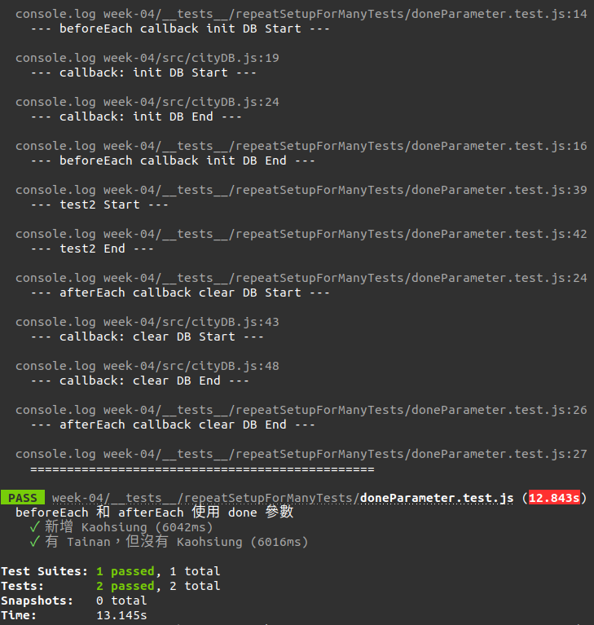
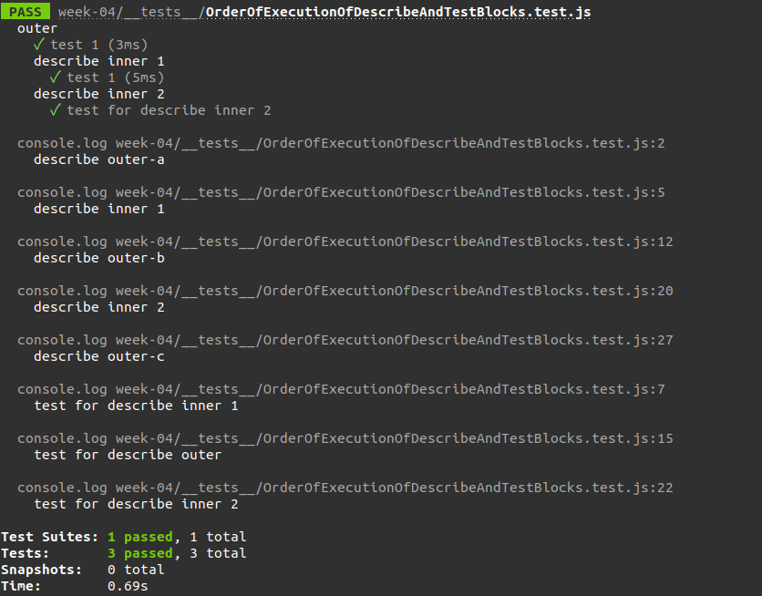

<!DOCTYPE html><html><head><meta charset="utf-8"><title>Jest：Setup &amp; Teardown | Titangene Blog</title><meta http-equiv="X-UA-Compatible" content="IE=edge"><meta name="viewport" content="width=device-width,initial-scale=1,maximum-scale=1"><meta name="HandheldFriendly" content="True"><meta name="apple-mobile-web-app-capable" content="yes"><meta name="author" content="Titangene"><link rel="shortcut icon" href="/favicon.ico"><link rel="alternate" href="/atom.xml" title="Titangene Blog"><meta name="description" content="每個測試案例都必須是獨立的，不能互相影響，而解決方法就是讓每個測試在執行前進行重設，或在每個測試結束後清除痕跡。在 Jest，提供 setup 和 teardown 的函數，能讓你自訂在執行 describe 區塊或 test 區塊的前後分別要做什麼準備和收尾。"><meta property="og:type" content="article"><meta property="og:title" content="Jest：Setup &amp; Teardown"><meta property="og:url" content="https://titangene.github.io/article/jest-setup-teardown.html"><meta property="og:site_name" content="Titangene Blog"><meta property="og:description" content="每個測試案例都必須是獨立的，不能互相影響，而解決方法就是讓每個測試在執行前進行重設，或在每個測試結束後清除痕跡。在 Jest，提供 setup 和 teardown 的函數，能讓你自訂在執行 describe 區塊或 test 區塊的前後分別要做什麼準備和收尾。"><meta property="og:locale" content="zh_TW"><meta property="og:image" content="https://titangene.github.io/images/cover/jest.jpg"><meta property="article:published_time" content="2020-06-21T15:56:15.000Z"><meta property="article:modified_time" content="2020-06-21T15:56:07.894Z"><meta property="article:author" content="Titangene"><meta property="article:tag" content="w3HexSchool"><meta property="article:tag" content="Jest"><meta property="article:tag" content="JavaScript"><meta property="article:tag" content="Unit Testing"><meta name="twitter:card" content="summary_large_image"><meta name="twitter:image" content="https://titangene.github.io/images/cover/jest.jpg"><meta name="twitter:creator" content="@titangeneTW"><meta name="twitter:site" content="@titangene_blog"><meta property="fb:admins" content="100001106016019"><meta property="fb:app_id" content="2470546159839111"><meta property="og:image:width" content="1200"><meta property="og:image:height" content="630"><meta name="google-site-verification" content="AaJ39L7h-nWwJjXJMhAMtXSF6H6BUgGWXC80kYvLic8"><link href="https://fonts.googleapis.com/css2?family=Roboto&display=swap" rel="stylesheet"><link href="https://fonts.googleapis.com/css?family=Source+Code+Pro&display=swap" rel="stylesheet"><link rel="stylesheet" href="https://cdnjs.cloudflare.com/ajax/libs/font-awesome/5.13.0/css/all.min.css"><link rel="stylesheet" href="https://unpkg.com/gitalk/dist/gitalk.css"><link rel="stylesheet" href="/style.css"><script async src="https://www.googletagmanager.com/gtag/js?id=UA-129758206-1"></script><script>!function(a){function n(){dataLayer.push(arguments)}a.dataLayer=a.dataLayer||[],n("js",new Date),n("config","UA-129758206-1")}(window)</script><script>function setLoadingBarProgress(e){document.getElementById("loading-bar").style.width=e+"%"}</script><meta name="generator" content="Hexo 4.2.0"><link rel="alternate" href="/atom.xml" title="Titangene Blog" type="application/atom+xml"></head></html><body><div id="loading-bar-wrapper"><div id="loading-bar"></div></div><script>setLoadingBarProgress(20)</script><header class="l_header"><div class="wrapper"><div class="nav-main container container--flex"><a class="logo flat-box" href="/">Titangene Blog</a><div class="menu"><ul class="h-list"><li><a class="flat-box nav-home" href="/">Home</a></li><li><a class="flat-box nav-archives" href="/archives">Archives</a></li></ul><div class="underline"></div></div><div class="m_search"><form name="searchform" class="form u-search-form"><input type="text" class="input u-search-input" placeholder="Search"> <i class="fas fa-search"></i></form></div><ul class="switcher h-list"><li class="s-search"><a class="fas fa-search" href="javascript:void(0)"></a></li><li class="s-menu"><a class="fas fa-bars" href="javascript:void(0)"></a></li></ul></div><div class="nav-sub container container--flex"><a class="logo flat-box" href="/">Titangene Blog</a><ul class="switcher h-list"><li class="s-comment"><a class="far fa-comment-alt" href="javascript:void(0)"></a></li><li class="s-top"><a class="fas fa-arrow-up" href="javascript:void(0)"></a></li><li class="s-toc"><a class="fas fa-list-ol" href="javascript:void(0)"></a></li></ul></div></div></header><aside class="menu-phone"><nav><a href="/" class="nav-home nav">Home </a><a href="/archives" class="nav-archives nav">Archives</a></nav></aside><script>setLoadingBarProgress(40)</script><div class="l_body"><div class="container clearfix"><div class="l_main"><article id="post-jest-setup-teardown" class="post white-box article-type-post" itemscope itemprop="blogPost"><section class="meta"><h2 class="title"><a href="/article/jest-setup-teardown.html">Jest：Setup &amp; Teardown</a></h2><span class="post-time"><span class="post-meta-item-icon"><i class="fa fa-calendar"></i> </span><span class="post-meta-item-text">發表於</span> <time title="建立時間：2020-06-21 23:56:15" itemprop="dateCreated datePublished" datetime="2020-06-21T23:56:15+08:00">2020-06-21</time></span> <span class="comments-count"><span class="post-meta-divider">|</span> <span class="post-meta-item-icon"><i class="fas fa-comment"></i> </span><a href="https://titangene.github.io/article/jest-setup-teardown.html#comments" class="article-comment-count">留言</a></span><div class="post-category"><span class="post-meta-item-icon"><i class="fa fa-folder"></i> </span><span class="post-meta-item-text">分類於</span> <span itemprop="about" itemscope itemtype="http://schema.org/Thing"><a href="/categories/testing/" itemprop="url" rel="index"><span itemprop="name">Testing</span></a></span></div></section><section class="toc-wrapper"><h3>目錄</h3><ol class="toc"><li class="toc-item toc-level-1"><a class="toc-link" href="#測試案例互相汙染"><span class="toc-text">測試案例互相汙染</span></a></li><li class="toc-item toc-level-1"><a class="toc-link" href="#多次測試的重複設定：beforeEach、afterEach"><span class="toc-text">多次測試的重複設定：beforeEach、afterEach</span></a><ol class="toc-child"><li class="toc-item toc-level-2"><a class="toc-link" href="#同步的重複設定"><span class="toc-text">同步的重複設定</span></a></li><li class="toc-item toc-level-2"><a class="toc-link" href="#非同步的重複設定"><span class="toc-text">非同步的重複設定</span></a><ol class="toc-child"><li class="toc-item toc-level-3"><a class="toc-link" href="#使用-done-參數"><span class="toc-text">使用 .done 參數</span></a></li><li class="toc-item toc-level-3"><a class="toc-link" href="#回傳-promise"><span class="toc-text">回傳 promise</span></a></li></ol></li></ol></li><li class="toc-item toc-level-1"><a class="toc-link" href="#一次性設定：beforeAll、afterAll"><span class="toc-text">一次性設定：beforeAll、afterAll</span></a></li><li class="toc-item toc-level-1"><a class="toc-link" href="#Scoping"><span class="toc-text">Scoping</span></a></li><li class="toc-item toc-level-1"><a class="toc-link" href="#describe-區塊和-test-區塊的執行順序"><span class="toc-text">describe 區塊和 test 區塊的執行順序</span></a></li><li class="toc-item toc-level-1"><a class="toc-link" href="#建議"><span class="toc-text">建議</span></a></li><li class="toc-item toc-level-1"><a class="toc-link" href="#參考資料"><span class="toc-text">參考資料</span></a></li></ol></section><section class="article typo"><div class="article-entry" itemprop="articleBody"><p></p><p>每個測試案例都必須是獨立的，不能互相影響，而解決方法就是讓每個測試在執行前進行重設，或在每個測試結束後清除痕跡。在 Jest，提供 setup 和 teardown 的函數，能讓你自訂在執行 <code>describe</code> 區塊或 <code>test</code> 區塊的前後分別要做什麼準備和收尾。</p><a id="more"></a><blockquote><p>其他 Jest 相關文章可參閱 <a href="https://titangene.github.io/tags/jest/">Jest 系列文章</a>。</p></blockquote><h1 id="測試案例互相汙染"><a class="header-anchor" href="#測試案例互相汙染"></a>測試案例互相汙染</h1><p>一開始寫測試時，可能會發生測試案例互相汙染的問題。</p><p>例如：有一個城市資料庫，提供初始化、清除、新增以及檢查是否已存在資料庫內這些功能：</p><figure class="highlight javascript"><table><tr><td class="gutter"><pre><span class="line">1</span><br><span class="line">2</span><br><span class="line">3</span><br><span class="line">4</span><br><span class="line">5</span><br><span class="line">6</span><br><span class="line">7</span><br><span class="line">8</span><br><span class="line">9</span><br><span class="line">10</span><br><span class="line">11</span><br><span class="line">12</span><br><span class="line">13</span><br><span class="line">14</span><br><span class="line">15</span><br><span class="line">16</span><br><span class="line">17</span><br><span class="line">18</span><br><span class="line">19</span><br><span class="line">20</span><br><span class="line">21</span><br><span class="line">22</span><br><span class="line">23</span><br><span class="line">24</span><br><span class="line">25</span><br></pre></td><td class="code"><pre><code class="hljs javascript"><span class="hljs-comment">// src/cityDB.js</span><br><span class="hljs-keyword">let</span> cityDB = [];<br><br><span class="hljs-function"><span class="hljs-keyword">function</span> <span class="hljs-title">initCityDB</span>(<span class="hljs-params"></span>) </span>&#123;<br>  cityDB = [<span class="hljs-string">'Taipei'</span>, <span class="hljs-string">'Tainan'</span>];<br>&#125;<br><br><span class="hljs-function"><span class="hljs-keyword">function</span> <span class="hljs-title">clearCityDB</span>(<span class="hljs-params"></span>) </span>&#123;<br>  cityDB = [];<br>&#125;<br><br><span class="hljs-function"><span class="hljs-keyword">function</span> <span class="hljs-title">addCity</span>(<span class="hljs-params">city</span>) </span>&#123;<br>  cityDB.push(city);<br>&#125;<br><br><span class="hljs-function"><span class="hljs-keyword">function</span> <span class="hljs-title">isCity</span>(<span class="hljs-params">city</span>) </span>&#123;<br>  <span class="hljs-keyword">return</span> cityDB.includes(city);<br>&#125;<br><br><span class="hljs-keyword">export</span> &#123;<br>  initCityDB,<br>  clearCityDB,<br>  addCity,<br>  isCity<br>&#125;<br></code></pre></td></tr></table></figure><p>如果測試寫起來像這樣會發現，第一個測試操作的步驟會影響到第二個測試 (所以第二個測試不用初始化 DB 和新增城市就已經擁有該城市，看起來很奇怪吧？)：</p><figure class="highlight javascript"><table><tr><td class="gutter"><pre><span class="line">1</span><br><span class="line">2</span><br><span class="line">3</span><br><span class="line">4</span><br><span class="line">5</span><br><span class="line">6</span><br><span class="line">7</span><br><span class="line">8</span><br><span class="line">9</span><br><span class="line">10</span><br><span class="line">11</span><br><span class="line">12</span><br><span class="line">13</span><br><span class="line">14</span><br><span class="line">15</span><br><span class="line">16</span><br><span class="line">17</span><br><span class="line">18</span><br><span class="line">19</span><br><span class="line">20</span><br><span class="line">21</span><br></pre></td><td class="code"><pre><code class="hljs javascript"><span class="hljs-comment">// __tests__/unusedBeforeEachAndAfterEach.test.js</span><br><span class="hljs-keyword">import</span> &#123;<br>  initCityDB,<br>  isCity,<br>  addCity<br>&#125; <span class="hljs-keyword">from</span> <span class="hljs-string">'../../src/cityDB'</span>;<br><br>describe(<span class="hljs-string">'未使用 beforeEach 和 afterEach'</span>, () =&gt; &#123;<br>  describe(<span class="hljs-string">'測試案例會互相汙染'</span>, () =&gt; &#123;<br>    test(<span class="hljs-string">'新增 Kaohsiung'</span>, () =&gt; &#123;<br>      initCityDB();<br>      expect(isCity(<span class="hljs-string">'Kaohsiung'</span>)).toBeFalsy();<br>      addCity(<span class="hljs-string">'Kaohsiung'</span>);<br>      expect(isCity(<span class="hljs-string">'Kaohsiung'</span>)).toBeTruthy();<br>    &#125;);<br><br>    test(<span class="hljs-string">'第二個測試案例未重新設定，所以有 Kaohsiung'</span>, () =&gt; &#123;<br>      expect(isCity(<span class="hljs-string">'Kaohsiung'</span>)).toBeTruthy();<br>    &#125;);<br>  &#125;);<br>&#125;);<br></code></pre></td></tr></table></figure><p>所以你可能會手動處理初始化和清除的工作：</p><figure class="highlight javascript"><table><tr><td class="gutter"><pre><span class="line">1</span><br><span class="line">2</span><br><span class="line">3</span><br><span class="line">4</span><br><span class="line">5</span><br><span class="line">6</span><br><span class="line">7</span><br><span class="line">8</span><br><span class="line">9</span><br><span class="line">10</span><br><span class="line">11</span><br><span class="line">12</span><br><span class="line">13</span><br><span class="line">14</span><br><span class="line">15</span><br><span class="line">16</span><br><span class="line">17</span><br><span class="line">18</span><br><span class="line">19</span><br><span class="line">20</span><br><span class="line">21</span><br><span class="line">22</span><br><span class="line">23</span><br><span class="line">24</span><br><span class="line">25</span><br></pre></td><td class="code"><pre><code class="hljs javascript"><span class="hljs-comment">// __tests__/unusedBeforeEachAndAfterEach.test.js</span><br><span class="hljs-keyword">import</span> &#123;<br>  initCityDB,<br>  clearCityDB,<br>  isCity,<br>  addCity<br>&#125; <span class="hljs-keyword">from</span> <span class="hljs-string">'../../src/cityDB'</span>;<br><br>describe(<span class="hljs-string">'未使用 beforeEach 和 afterEach'</span>, () =&gt; &#123;<br>  describe(<span class="hljs-string">'手動在每個測試案例重複設定'</span>, () =&gt; &#123;<br>    test(<span class="hljs-string">'新增 Kaohsiung'</span>, () =&gt; &#123;<br>      initCityDB();<br>      expect(isCity(<span class="hljs-string">'Kaohsiung'</span>)).toBeFalsy();<br>      addCity(<span class="hljs-string">'Kaohsiung'</span>);<br>      expect(isCity(<span class="hljs-string">'Kaohsiung'</span>)).toBeTruthy();<br>      clearCityDB();<br>    &#125;);<br>    <br>    test(<span class="hljs-string">'第二個測試案例有重新設定，所以預設沒有 Kaohsiung'</span>, () =&gt; &#123;<br>      initCityDB();<br>      expect(isCity(<span class="hljs-string">'Kaohsiung'</span>)).toBeFalsy();<br>      clearCityDB();<br>    &#125;);<br>  &#125;);<br>&#125;);<br></code></pre></td></tr></table></figure><p>但每次都要手動處理這些問題很麻煩，所以在寫測試時常需要：</p><ul><li>在測試執行前進行一些設定工作</li><li>在測試執行後進行一些收尾工作</li></ul><h1 id="多次測試的重複設定：beforeEach、afterEach"><a class="header-anchor" href="#多次測試的重複設定：beforeEach、afterEach"></a>多次測試的重複設定：<code>beforeEach</code>、<code>afterEach</code></h1><p>每個測試案例都要進行一些設定，可用 <code>beforeEach</code> 和 <code>afterEach</code>：</p><ul><li><code>beforeEach(fn, timeout)</code>：<ul><li>在執行此檔案中的每個測試之前執行 <code>fn</code> 函數</li><li>若 <code>fn</code> 函數回傳 promise 或 generator，Jest 會在執行測試之前等待該 promise resolve</li><li>若 <code>beforeEach</code> 放在 <code>describe</code> 區塊內，就只會在此區塊內的測試之前執行</li><li>例如：重置每個測試要使用的全域狀態</li></ul></li><li><code>afterEach(fn, timeout)</code>：<ul><li>在執行此檔案中的每個測試之後執行 <code>fn</code> 函數</li><li>若 <code>fn</code> 函數回傳 promise 或 generator，Jest 會等待該 promise resolve 後才會繼續</li><li>若 <code>afterEach</code> 放在 <code>describe</code> 區塊內，就只會在此區塊內的測試之後執行</li><li>例如：清除每個測試建立的某些臨時狀態</li></ul></li></ul><div class="info"><p><code>timeout</code> 是可選參數，可提供 timeout 來指定 <code>beforeEach</code> 或 <code>afterEach</code> 中止前要等待的時間，單位為豪秒，預設為 5 秒。</p></div><h2 id="同步的重複設定"><a class="header-anchor" href="#同步的重複設定"></a>同步的重複設定</h2><p>例如：要在每個測試案例執行之前呼叫 <code>initCityDB()</code>，並在每個測試案例執行之後呼叫 <code>clearCityDB()</code>：</p><figure class="highlight javascript"><table><tr><td class="gutter"><pre><span class="line">1</span><br><span class="line">2</span><br><span class="line">3</span><br><span class="line">4</span><br><span class="line">5</span><br><span class="line">6</span><br><span class="line">7</span><br><span class="line">8</span><br><span class="line">9</span><br><span class="line">10</span><br><span class="line">11</span><br><span class="line">12</span><br><span class="line">13</span><br><span class="line">14</span><br><span class="line">15</span><br><span class="line">16</span><br><span class="line">17</span><br><span class="line">18</span><br><span class="line">19</span><br><span class="line">20</span><br><span class="line">21</span><br><span class="line">22</span><br><span class="line">23</span><br><span class="line">24</span><br><span class="line">25</span><br><span class="line">26</span><br><span class="line">27</span><br><span class="line">28</span><br><span class="line">29</span><br><span class="line">30</span><br><span class="line">31</span><br><span class="line">32</span><br><span class="line">33</span><br><span class="line">34</span><br><span class="line">35</span><br><span class="line">36</span><br><span class="line">37</span><br></pre></td><td class="code"><pre><code class="hljs javascript"><span class="hljs-comment">// __tests__/repeatSetupForManyTests/sync.test.js</span><br><span class="hljs-keyword">import</span> &#123;<br>  addCity,<br>  clearCityDB,<br>  initCityDB,<br>  isCity<br>&#125; <span class="hljs-keyword">from</span> <span class="hljs-string">'../../src/cityDB'</span>;<br><br>describe(<span class="hljs-string">'使用 beforeEach 和 afterEach 對多個測試重複設定'</span>, () =&gt; &#123;<br>  beforeEach(<span class="hljs-function"><span class="hljs-params">()</span> =&gt;</span> &#123;<br>    <span class="hljs-built_in">console</span>.log(<span class="hljs-string">`--- beforeEach init DB Start ---`</span>);<br>    initCityDB();<br>    <span class="hljs-built_in">console</span>.log(<span class="hljs-string">`--- beforeEach init DB End ---`</span>);<br>  &#125;);<br><br>  afterEach(<span class="hljs-function"><span class="hljs-params">()</span> =&gt;</span> &#123;<br>    <span class="hljs-built_in">console</span>.log(<span class="hljs-string">`--- afterEach clear DB Start ---`</span>);<br>    clearCityDB();<br>    <span class="hljs-built_in">console</span>.log(<span class="hljs-string">`--- afterEach clear DB End ---`</span>);<br>    <span class="hljs-built_in">console</span>.log(<span class="hljs-string">`=========================================`</span>);<br>  &#125;);<br><br>  test(<span class="hljs-string">'新增 Kaohsiung'</span>, () =&gt; &#123;<br>    <span class="hljs-built_in">console</span>.log(<span class="hljs-string">`--- test1 Start ---`</span>);<br>    expect(isCity(<span class="hljs-string">'Kaohsiung'</span>)).toBeFalsy();<br>    addCity(<span class="hljs-string">'Kaohsiung'</span>);<br>    expect(isCity(<span class="hljs-string">'Kaohsiung'</span>)).toBeTruthy();<br>    <span class="hljs-built_in">console</span>.log(<span class="hljs-string">`--- test1 End ---`</span>);<br>  &#125;);<br>  <br>  test(<span class="hljs-string">'有 Tainan，但沒有 Kaohsiung'</span>, () =&gt; &#123;<br>    <span class="hljs-built_in">console</span>.log(<span class="hljs-string">`--- test2 Start ---`</span>);<br>    expect(isCity(<span class="hljs-string">'Tainan'</span>)).toBeTruthy();<br>    expect(isCity(<span class="hljs-string">'Kaohsiung'</span>)).toBeFalsy();<br>    <span class="hljs-built_in">console</span>.log(<span class="hljs-string">`--- test2 End ---`</span>);<br>  &#125;);<br>&#125;);<br></code></pre></td></tr></table></figure><p>執行測試；</p><figure class="highlight shell"><table><tr><td class="gutter"><pre><span class="line">1</span><br></pre></td><td class="code"><pre><code class="hljs shell"><span class="hljs-meta">$</span><span class="bash"> npx jest ./__tests__/repeatSetupForManyTests/sync.test.js --watch</span><br></code></pre></td></tr></table></figure><p></p><h2 id="非同步的重複設定"><a class="header-anchor" href="#非同步的重複設定"></a>非同步的重複設定</h2><p><code>beforeEach</code> 和 <code>afterEach</code> 可以若要<a href="https://jestjs.io/docs/en/asynchronous" target="_blank" rel="noopener">處理非同步</a>，有兩種處理方式：</p><ul><li>使用 <code>.done</code> 參數</li><li>回傳 promise</li></ul><h3 id="使用-done-參數"><a class="header-anchor" href="#使用-done-參數"></a>使用 <code>.done</code> 參數</h3><figure class="highlight javascript"><table><tr><td class="gutter"><pre><span class="line">1</span><br><span class="line">2</span><br><span class="line">3</span><br><span class="line">4</span><br><span class="line">5</span><br><span class="line">6</span><br><span class="line">7</span><br><span class="line">8</span><br><span class="line">9</span><br><span class="line">10</span><br><span class="line">11</span><br><span class="line">12</span><br><span class="line">13</span><br><span class="line">14</span><br><span class="line">15</span><br><span class="line">16</span><br><span class="line">17</span><br><span class="line">18</span><br><span class="line">19</span><br><span class="line">20</span><br><span class="line">21</span><br><span class="line">22</span><br><span class="line">23</span><br><span class="line">24</span><br><span class="line">25</span><br><span class="line">26</span><br><span class="line">27</span><br><span class="line">28</span><br><span class="line">29</span><br><span class="line">30</span><br><span class="line">31</span><br><span class="line">32</span><br><span class="line">33</span><br><span class="line">34</span><br><span class="line">35</span><br><span class="line">36</span><br><span class="line">37</span><br><span class="line">38</span><br><span class="line">39</span><br><span class="line">40</span><br><span class="line">41</span><br><span class="line">42</span><br><span class="line">43</span><br><span class="line">44</span><br><span class="line">45</span><br></pre></td><td class="code"><pre><code class="hljs javascript"><span class="hljs-comment">// __tests__/repeatSetupForManyTests/doneParameter.test.js</span><br><span class="hljs-keyword">import</span> &#123;<br>  addCity,<br>  clearCityDBCallback,<br>  initCityDBCallback,<br>  isCity<br>&#125; <span class="hljs-keyword">from</span> <span class="hljs-string">'../../src/cityDB'</span>;<br><br>describe(<span class="hljs-string">'beforeEach 和 afterEach 使用 done 參數'</span>, () =&gt; &#123;<br>  beforeEach(<span class="hljs-function"><span class="hljs-params">done</span> =&gt;</span> &#123;<br>    <span class="hljs-function"><span class="hljs-keyword">function</span> <span class="hljs-title">callback</span>(<span class="hljs-params"></span>) </span>&#123;<br>      done();<br>    &#125;<br>    <br>    <span class="hljs-built_in">console</span>.log(<span class="hljs-string">`--- beforeEach callback init DB Start ---`</span>);<br>    initCityDBCallback(callback);<br>    <span class="hljs-built_in">console</span>.log(<span class="hljs-string">`--- beforeEach callback init DB End ---`</span>);<br>  &#125;);<br><br>  afterEach(<span class="hljs-function"><span class="hljs-params">done</span> =&gt;</span> &#123;<br>    <span class="hljs-function"><span class="hljs-keyword">function</span> <span class="hljs-title">callback</span>(<span class="hljs-params"></span>) </span>&#123;<br>      done();<br>    &#125;<br>    <br>    <span class="hljs-built_in">console</span>.log(<span class="hljs-string">`--- afterEach callback clear DB Start ---`</span>);<br>    clearCityDBCallback(callback);<br>    <span class="hljs-built_in">console</span>.log(<span class="hljs-string">`--- afterEach callback clear DB End ---`</span>);<br>    <span class="hljs-built_in">console</span>.log(<span class="hljs-string">`===============================================`</span>);<br>  &#125;);<br><br>  test(<span class="hljs-string">'新增 Kaohsiung'</span>, () =&gt; &#123;<br>    <span class="hljs-built_in">console</span>.log(<span class="hljs-string">`--- test1 Start ---`</span>);<br>    expect(isCity(<span class="hljs-string">'Kaohsiung'</span>)).toBeFalsy();<br>    addCity(<span class="hljs-string">'Kaohsiung'</span>);<br>    expect(isCity(<span class="hljs-string">'Kaohsiung'</span>)).toBeTruthy();<br>    <span class="hljs-built_in">console</span>.log(<span class="hljs-string">`--- test1 End ---`</span>);<br>  &#125;);<br>  <br>  test(<span class="hljs-string">'有 Tainan，但沒有 Kaohsiung'</span>, () =&gt; &#123;<br>    <span class="hljs-built_in">console</span>.log(<span class="hljs-string">`--- test2 Start ---`</span>);<br>    expect(isCity(<span class="hljs-string">'Tainan'</span>)).toBeTruthy();<br>    expect(isCity(<span class="hljs-string">'Kaohsiung'</span>)).toBeFalsy();<br>    <span class="hljs-built_in">console</span>.log(<span class="hljs-string">`--- test2 End ---`</span>);<br>  &#125;);<br>&#125;)<br></code></pre></td></tr></table></figure><p>執行測試：</p><figure class="highlight shell"><table><tr><td class="gutter"><pre><span class="line">1</span><br></pre></td><td class="code"><pre><code class="hljs shell"><span class="hljs-meta">$</span><span class="bash"> npx jest ./__tests__/repeatSetupForManyTests/doneParameter.test.js --watch</span><br></code></pre></td></tr></table></figure><p></p><p></p><h3 id="回傳-promise"><a class="header-anchor" href="#回傳-promise"></a>回傳 promise</h3><figure class="highlight javascript"><table><tr><td class="gutter"><pre><span class="line">1</span><br><span class="line">2</span><br><span class="line">3</span><br><span class="line">4</span><br><span class="line">5</span><br><span class="line">6</span><br><span class="line">7</span><br><span class="line">8</span><br><span class="line">9</span><br><span class="line">10</span><br><span class="line">11</span><br><span class="line">12</span><br><span class="line">13</span><br><span class="line">14</span><br><span class="line">15</span><br><span class="line">16</span><br><span class="line">17</span><br><span class="line">18</span><br><span class="line">19</span><br><span class="line">20</span><br><span class="line">21</span><br><span class="line">22</span><br><span class="line">23</span><br><span class="line">24</span><br><span class="line">25</span><br><span class="line">26</span><br><span class="line">27</span><br><span class="line">28</span><br><span class="line">29</span><br><span class="line">30</span><br><span class="line">31</span><br><span class="line">32</span><br><span class="line">33</span><br><span class="line">34</span><br></pre></td><td class="code"><pre><code class="hljs javascript"><span class="hljs-comment">// __tests__/repeatSetupForManyTests/returnPromise.test.js</span><br><span class="hljs-keyword">import</span> &#123;<br>  addCity,<br>  initCityDBPromise,<br>  clearCityDBPromise,<br>  isCity<br>&#125; <span class="hljs-keyword">from</span> <span class="hljs-string">'../../src/cityDB'</span>;<br><br>describe(<span class="hljs-string">'城市資料庫 (使用 beforeEach 和 afterEach 回傳 promise)'</span>, () =&gt; &#123;<br>  beforeEach(<span class="hljs-function"><span class="hljs-params">()</span> =&gt;</span> &#123;<br>    <span class="hljs-built_in">console</span>.log(<span class="hljs-string">`--- beforeEach promise init DB Start ---`</span>);<br>    <span class="hljs-keyword">return</span> initCityDBPromise();<br>  &#125;);<br>  <br>  afterEach(<span class="hljs-function"><span class="hljs-params">()</span> =&gt;</span> &#123;<br>    <span class="hljs-built_in">console</span>.log(<span class="hljs-string">`--- afterEach promise clear DB Start ---`</span>);<br>    <span class="hljs-keyword">return</span> clearCityDBPromise();<br>  &#125;);<br><br>  test(<span class="hljs-string">'新增 Kaohsiung'</span>, () =&gt; &#123;<br>    <span class="hljs-built_in">console</span>.log(<span class="hljs-string">`--- test1 Start ---`</span>);<br>    expect(isCity(<span class="hljs-string">'Kaohsiung'</span>)).toBeFalsy();<br>    addCity(<span class="hljs-string">'Kaohsiung'</span>);<br>    expect(isCity(<span class="hljs-string">'Kaohsiung'</span>)).toBeTruthy();<br>    <span class="hljs-built_in">console</span>.log(<span class="hljs-string">`--- test1 End ---`</span>);<br>  &#125;);<br>  <br>  test(<span class="hljs-string">'有 Tainan，但沒有 Kaohsiung'</span>, () =&gt; &#123;<br>    <span class="hljs-built_in">console</span>.log(<span class="hljs-string">`--- test2 Start ---`</span>);<br>    expect(isCity(<span class="hljs-string">'Tainan'</span>)).toBeTruthy();<br>    expect(isCity(<span class="hljs-string">'Kaohsiung'</span>)).toBeFalsy();<br>    <span class="hljs-built_in">console</span>.log(<span class="hljs-string">`--- test2 End ---`</span>);<br>  &#125;);<br>&#125;);<br></code></pre></td></tr></table></figure><p>執行測試：</p><figure class="highlight shell"><table><tr><td class="gutter"><pre><span class="line">1</span><br></pre></td><td class="code"><pre><code class="hljs shell"><span class="hljs-meta">$</span><span class="bash"> npx jest ./__tests__/repeatSetupForManyTests/returnPromise.test.js --watch</span><br></code></pre></td></tr></table></figure><p></p><h1 id="一次性設定：beforeAll、afterAll"><a class="header-anchor" href="#一次性設定：beforeAll、afterAll"></a>一次性設定：<code>beforeAll</code>、<code>afterAll</code></h1><p>有時需要在檔案的開頭執行一次設定。當設定是非同步時，可能很麻煩，所以不能直接在檔案開頭處理。Jest 提供 <code>beforeAll</code> 和 <code>afterAll</code> 來處理這種情況。</p><p>若要在所有測試執行之後處理一些事，可用 <code>beforeAll</code> 和 <code>afterAll</code>：</p><ul><li><code>beforeAll(fn, timeout)</code>：<ul><li>在執行此檔案中的所有測試之前執行 <code>fn</code> 函數</li><li>若 <code>fn</code> 函數回傳 promise 或 generator，Jest 會在執行測試之前等待該 promise resolve</li><li>若 <code>beforeAll</code> 放在 <code>describe</code> 區塊內，就只會在此區塊內的開頭執行</li><li>例如：設定多個測試都要共用的全域狀態</li></ul></li><li><code>afterAll(fn, timeout)</code>：<ul><li>在執行此檔案中的所有測試之後執行 <code>fn</code> 函數</li><li>若 <code>fn</code> 函數回傳 promise 或 generator，Jest 會等待該 promise resolve 後才會繼續</li><li>若 <code>afterAll</code> 放在 <code>describe</code> 區塊內，就只會在此區塊內的結尾執行</li><li>例如：清除多個測試都要共用的全域狀態</li></ul></li></ul><div class="info"><p><code>timeout</code> 是可選參數，可提供 timeout 來指定 <code>beforeAll</code> 或 <code>afterAll</code> 中止前要等待的時間，單位為豪秒，預設為 5 秒</p></div><p>例如：若 <code>initCityDBPromise</code> 和 <code>clearCityDBPromise</code> 都回傳 promise，並且城市資料庫可以在多個測試案例之間重用：</p><figure class="highlight javascript"><table><tr><td class="gutter"><pre><span class="line">1</span><br><span class="line">2</span><br><span class="line">3</span><br><span class="line">4</span><br><span class="line">5</span><br><span class="line">6</span><br><span class="line">7</span><br><span class="line">8</span><br><span class="line">9</span><br><span class="line">10</span><br><span class="line">11</span><br><span class="line">12</span><br><span class="line">13</span><br><span class="line">14</span><br><span class="line">15</span><br><span class="line">16</span><br><span class="line">17</span><br><span class="line">18</span><br><span class="line">19</span><br><span class="line">20</span><br><span class="line">21</span><br><span class="line">22</span><br></pre></td><td class="code"><pre><code class="hljs javascript"><span class="hljs-comment">// src/cityDB.js</span><br><span class="hljs-function"><span class="hljs-keyword">function</span> <span class="hljs-title">initCityDBPromise</span>(<span class="hljs-params"></span>) </span>&#123;<br>  <span class="hljs-keyword">return</span> <span class="hljs-keyword">new</span> <span class="hljs-built_in">Promise</span>(<span class="hljs-function">(<span class="hljs-params">resolve, reject</span>) =&gt;</span> &#123;<br>    <span class="hljs-built_in">console</span>.log(<span class="hljs-string">`--- Promise：init DB Start ---`</span>);<br>    setTimeout(<span class="hljs-function"><span class="hljs-params">()</span> =&gt;</span> &#123;<br>      cityDB = [<span class="hljs-string">'Taipei'</span>, <span class="hljs-string">'Tainan'</span>];<br>      resolve();<br>    &#125;, <span class="hljs-number">3000</span>);<br>    <span class="hljs-built_in">console</span>.log(<span class="hljs-string">`--- Promise：init DB End ---`</span>);<br>  &#125;);<br>&#125;<br><br><span class="hljs-function"><span class="hljs-keyword">function</span> <span class="hljs-title">clearCityDBPromise</span>(<span class="hljs-params"></span>) </span>&#123;<br>  <span class="hljs-keyword">return</span> <span class="hljs-keyword">new</span> <span class="hljs-built_in">Promise</span>(<span class="hljs-function">(<span class="hljs-params">resolve, reject</span>) =&gt;</span> &#123;<br>    <span class="hljs-built_in">console</span>.log(<span class="hljs-string">`--- Promise：clear DB Start ---`</span>);<br>    setTimeout(<span class="hljs-function"><span class="hljs-params">()</span> =&gt;</span> &#123;<br>      cityDB = [];<br>      resolve();<br>    &#125;, <span class="hljs-number">3000</span>);<br>    <span class="hljs-built_in">console</span>.log(<span class="hljs-string">`--- Promise：clear DB End ---`</span>);<br>  &#125;);<br>&#125;<br></code></pre></td></tr></table></figure><figure class="highlight javascript"><table><tr><td class="gutter"><pre><span class="line">1</span><br><span class="line">2</span><br><span class="line">3</span><br><span class="line">4</span><br><span class="line">5</span><br><span class="line">6</span><br><span class="line">7</span><br><span class="line">8</span><br><span class="line">9</span><br><span class="line">10</span><br><span class="line">11</span><br><span class="line">12</span><br><span class="line">13</span><br><span class="line">14</span><br><span class="line">15</span><br><span class="line">16</span><br><span class="line">17</span><br><span class="line">18</span><br><span class="line">19</span><br><span class="line">20</span><br><span class="line">21</span><br><span class="line">22</span><br><span class="line">23</span><br><span class="line">24</span><br><span class="line">25</span><br><span class="line">26</span><br></pre></td><td class="code"><pre><code class="hljs javascript"><span class="hljs-comment">// __tests__/setupAndTeardown.test.js</span><br><span class="hljs-keyword">import</span> &#123;<br>  initCityDBPromise,<br>  clearCityDBPromise,<br>  isCity<br>&#125; <span class="hljs-keyword">from</span> <span class="hljs-string">'../src/cityDB'</span>;<br><br>beforeAll(<span class="hljs-function"><span class="hljs-params">()</span> =&gt;</span> &#123;<br>  <span class="hljs-built_in">console</span>.log(<span class="hljs-string">'beforeAll'</span>);<br>  <span class="hljs-keyword">return</span> initCityDBPromise();<br>&#125;);<br><br>afterAll(<span class="hljs-function"><span class="hljs-params">()</span> =&gt;</span> &#123;<br>  <span class="hljs-built_in">console</span>.log(<span class="hljs-string">'afterAll'</span>);<br>  <span class="hljs-keyword">return</span> clearCityDBPromise();<br>&#125;);<br><br>test(<span class="hljs-string">'有 Tainan'</span>, () =&gt; &#123;<br>  <span class="hljs-built_in">console</span>.log(<span class="hljs-string">'test 1'</span>);<br>  expect(isCity(<span class="hljs-string">'Tainan'</span>)).toBeTruthy();<br>&#125;);<br><br>test(<span class="hljs-string">'沒有 Kaohsiung'</span>, () =&gt; &#123;<br>  <span class="hljs-built_in">console</span>.log(<span class="hljs-string">'test 2'</span>);<br>  expect(isCity(<span class="hljs-string">'Kaohsiung'</span>)).toBeFalsy();<br>&#125;);<br></code></pre></td></tr></table></figure><p>執行測試：</p><figure class="highlight shell"><table><tr><td class="gutter"><pre><span class="line">1</span><br></pre></td><td class="code"><pre><code class="hljs shell"><span class="hljs-meta">$</span><span class="bash"> npx jest ./__tests__/setupAndTeardown.test.js --watch</span><br></code></pre></td></tr></table></figure><p></p><h1 id="Scoping"><a class="header-anchor" href="#Scoping"></a>Scoping</h1><p><code>before</code> 和 <code>after</code> 區塊適用於檔案中的每個測試，也可放在 <code>describe</code> 區塊來將測試案例分組。當 <code>before</code> 和 <code>after</code> 放在 <code>describe</code> 區塊中時，只適用在該 <code>describe</code> 區塊中的測試案例。</p><p>若以下這些放在 <code>describe</code> 區塊內；</p><ul><li><code>beforeAll</code>：只會在此區塊內的開頭執行</li><li><code>afterAll</code>：只會在此區塊內的結尾執行</li><li><code>beforeEach</code>：只會在此區塊內的測試之前執行</li><li><code>afterEach</code>：只會在此區塊內的測試之後執行</li></ul><p>例如：有城市資料庫和食物資料庫，可為不同測試做不同設定：</p><figure class="highlight javascript"><table><tr><td class="gutter"><pre><span class="line">1</span><br><span class="line">2</span><br><span class="line">3</span><br><span class="line">4</span><br><span class="line">5</span><br><span class="line">6</span><br><span class="line">7</span><br><span class="line">8</span><br><span class="line">9</span><br><span class="line">10</span><br><span class="line">11</span><br><span class="line">12</span><br><span class="line">13</span><br><span class="line">14</span><br><span class="line">15</span><br><span class="line">16</span><br><span class="line">17</span><br><span class="line">18</span><br><span class="line">19</span><br><span class="line">20</span><br><span class="line">21</span><br><span class="line">22</span><br><span class="line">23</span><br><span class="line">24</span><br><span class="line">25</span><br><span class="line">26</span><br><span class="line">27</span><br><span class="line">28</span><br><span class="line">29</span><br><span class="line">30</span><br><span class="line">31</span><br><span class="line">32</span><br><span class="line">33</span><br><span class="line">34</span><br><span class="line">35</span><br><span class="line">36</span><br><span class="line">37</span><br></pre></td><td class="code"><pre><code class="hljs javascript"><span class="hljs-comment">// src/foodDB.js</span><br><span class="hljs-keyword">let</span> foodDB = [];<br><br><span class="hljs-function"><span class="hljs-keyword">function</span> <span class="hljs-title">initFoodDBPromise</span>(<span class="hljs-params"></span>) </span>&#123;<br>  <span class="hljs-keyword">return</span> <span class="hljs-keyword">new</span> <span class="hljs-built_in">Promise</span>(<span class="hljs-function">(<span class="hljs-params">resolve, reject</span>) =&gt;</span> &#123;<br>    <span class="hljs-built_in">console</span>.log(<span class="hljs-string">`--- Promise: init DB Start ---`</span>);<br>    setTimeout(<span class="hljs-function"><span class="hljs-params">()</span> =&gt;</span> &#123;<br>      foodDB = [<br>        &#123; <span class="hljs-attr">city</span>: <span class="hljs-string">'Taipei'</span>, <span class="hljs-attr">name</span>: <span class="hljs-string">'Apple'</span> &#125;,<br>        &#123; <span class="hljs-attr">city</span>: <span class="hljs-string">'Tainan'</span>, <span class="hljs-attr">name</span>: <span class="hljs-string">'Banana'</span> &#125;<br>      ];<br>      resolve();<br>    &#125;, <span class="hljs-number">3000</span>);<br>    <span class="hljs-built_in">console</span>.log(<span class="hljs-string">`--- Promise: init DB End ---`</span>);<br>  &#125;);<br>&#125;<br><br><span class="hljs-function"><span class="hljs-keyword">function</span> <span class="hljs-title">clearFoodDBPromise</span>(<span class="hljs-params"></span>) </span>&#123;<br>  <span class="hljs-keyword">return</span> <span class="hljs-keyword">new</span> <span class="hljs-built_in">Promise</span>(<span class="hljs-function">(<span class="hljs-params">resolve, reject</span>) =&gt;</span> &#123;<br>    <span class="hljs-built_in">console</span>.log(<span class="hljs-string">`--- Promise: clear DB Start ---`</span>);<br>    setTimeout(<span class="hljs-function"><span class="hljs-params">()</span> =&gt;</span> &#123;<br>      foodDB = [];<br>      resolve();<br>    &#125;, <span class="hljs-number">3000</span>);<br>    <span class="hljs-built_in">console</span>.log(<span class="hljs-string">`--- Promise: clear DB End ---`</span>);<br>  &#125;);<br>&#125;<br><br><span class="hljs-function"><span class="hljs-keyword">function</span> <span class="hljs-title">isValidCityFoodPair</span>(<span class="hljs-params">foodCity, foodName</span>) </span>&#123;<br>  <span class="hljs-keyword">return</span> foodDB.some(<span class="hljs-function"><span class="hljs-params">food</span> =&gt;</span> (food.city === foodCity) &amp;&amp; (food.name === foodName));<br>&#125;<br><br><span class="hljs-keyword">export</span> &#123;<br>  initFoodDBPromise,<br>  clearFoodDBPromise,<br>  isValidCityFoodPair<br>&#125;<br></code></pre></td></tr></table></figure><figure class="highlight javascript"><table><tr><td class="gutter"><pre><span class="line">1</span><br><span class="line">2</span><br><span class="line">3</span><br><span class="line">4</span><br><span class="line">5</span><br><span class="line">6</span><br><span class="line">7</span><br><span class="line">8</span><br><span class="line">9</span><br><span class="line">10</span><br><span class="line">11</span><br><span class="line">12</span><br><span class="line">13</span><br><span class="line">14</span><br><span class="line">15</span><br><span class="line">16</span><br><span class="line">17</span><br><span class="line">18</span><br><span class="line">19</span><br><span class="line">20</span><br><span class="line">21</span><br><span class="line">22</span><br><span class="line">23</span><br><span class="line">24</span><br><span class="line">25</span><br><span class="line">26</span><br><span class="line">27</span><br><span class="line">28</span><br><span class="line">29</span><br><span class="line">30</span><br><span class="line">31</span><br><span class="line">32</span><br><span class="line">33</span><br><span class="line">34</span><br><span class="line">35</span><br><span class="line">36</span><br><span class="line">37</span><br><span class="line">38</span><br><span class="line">39</span><br><span class="line">40</span><br><span class="line">41</span><br><span class="line">42</span><br><span class="line">43</span><br><span class="line">44</span><br><span class="line">45</span><br><span class="line">46</span><br><span class="line">47</span><br><span class="line">48</span><br><span class="line">49</span><br><span class="line">50</span><br><span class="line">51</span><br><span class="line">52</span><br><span class="line">53</span><br><span class="line">54</span><br><span class="line">55</span><br><span class="line">56</span><br></pre></td><td class="code"><pre><code class="hljs javascript"><span class="hljs-comment">// __tests__/scoping/scope.test.js</span><br><span class="hljs-keyword">import</span> &#123;<br>  initCityDBPromise,<br>  clearCityDBPromise,<br>  isCity<br>&#125; <span class="hljs-keyword">from</span> <span class="hljs-string">'../../src/cityDB'</span>;<br><br><span class="hljs-keyword">import</span> &#123;<br>  initFoodDBPromise,<br>  clearFoodDBPromise,<br>  isValidCityFoodPair<br>&#125; <span class="hljs-keyword">from</span> <span class="hljs-string">'../../src/foodDB'</span>;<br><br><span class="hljs-comment">// 適用於此文件中的所有測試</span><br>beforeEach(<span class="hljs-function"><span class="hljs-params">()</span> =&gt;</span> &#123;<br>  <span class="hljs-built_in">console</span>.log(<span class="hljs-string">'global: beforeEach'</span>);<br>  <span class="hljs-keyword">return</span> initCityDBPromise();<br>&#125;);<br><br>afterEach(<span class="hljs-function"><span class="hljs-params">()</span> =&gt;</span> &#123;<br>  <span class="hljs-built_in">console</span>.log(<span class="hljs-string">'global: afterEach'</span>);<br>  <span class="hljs-keyword">return</span> clearCityDBPromise();<br>&#125;);<br><br>test(<span class="hljs-string">'城市資料庫有 Tainan'</span>, () =&gt; &#123;<br>  <span class="hljs-built_in">console</span>.log(<span class="hljs-string">'global: test1'</span>);<br>  expect(isCity(<span class="hljs-string">'Tainan'</span>)).toBeTruthy();<br>&#125;);<br><br>test(<span class="hljs-string">'城市資料庫沒有 Kaohsiung'</span>, () =&gt; &#123;<br>  <span class="hljs-built_in">console</span>.log(<span class="hljs-string">'global: test2'</span>);<br>  expect(isCity(<span class="hljs-string">'Kaohsiung'</span>)).toBeFalsy();<br>&#125;);<br><br>describe(<span class="hljs-string">'城市與食物 match'</span>, () =&gt; &#123;<br>  <span class="hljs-comment">// 僅適用於此 describe 區塊中的測試</span><br>  beforeEach(<span class="hljs-function"><span class="hljs-params">()</span> =&gt;</span> &#123;<br>    <span class="hljs-built_in">console</span>.log(<span class="hljs-string">'scope: beforeEach'</span>);<br>    <span class="hljs-keyword">return</span> initFoodDBPromise();<br>  &#125;);<br>  <br>  afterEach(<span class="hljs-function"><span class="hljs-params">()</span> =&gt;</span> &#123;<br>    <span class="hljs-built_in">console</span>.log(<span class="hljs-string">'scope: afterEach'</span>);<br>    <span class="hljs-keyword">return</span> clearFoodDBPromise();<br>  &#125;);<br>  <br>  test(<span class="hljs-string">'Taipei &lt;3 Apple'</span>, () =&gt; &#123;<br>    <span class="hljs-built_in">console</span>.log(<span class="hljs-string">'scope: test1'</span>);<br>    expect(isValidCityFoodPair(<span class="hljs-string">'Taipei'</span>, <span class="hljs-string">'Apple'</span>)).toBe(<span class="hljs-literal">true</span>);<br>  &#125;);<br>  <br>  test(<span class="hljs-string">'Tainan &lt;3 Banana'</span>, () =&gt; &#123;<br>    <span class="hljs-built_in">console</span>.log(<span class="hljs-string">'scope: test2'</span>);<br>    expect(isValidCityFoodPair(<span class="hljs-string">'Tainan'</span>, <span class="hljs-string">'Banana'</span>)).toBe(<span class="hljs-literal">true</span>);<br>  &#125;);<br>&#125;);<br></code></pre></td></tr></table></figure><p>執行測試：</p><figure class="highlight shell"><table><tr><td class="gutter"><pre><span class="line">1</span><br></pre></td><td class="code"><pre><code class="hljs shell"><span class="hljs-meta">$</span><span class="bash"> npx jest ./__tests__/scoping/scope.test.js --watch</span><br></code></pre></td></tr></table></figure><p></p><p></p><p></p><p>測試檔最上層的 <code>beforeEach</code> 會在 <code>describe</code> 區塊內的 <code>beforeEach</code> 之前執行。看以下範例可了解這些 hook 的執行順序：</p><figure class="highlight javascript"><table><tr><td class="gutter"><pre><span class="line">1</span><br><span class="line">2</span><br><span class="line">3</span><br><span class="line">4</span><br><span class="line">5</span><br><span class="line">6</span><br><span class="line">7</span><br><span class="line">8</span><br><span class="line">9</span><br><span class="line">10</span><br><span class="line">11</span><br><span class="line">12</span><br><span class="line">13</span><br><span class="line">14</span><br><span class="line">15</span><br><span class="line">16</span><br><span class="line">17</span><br><span class="line">18</span><br><span class="line">19</span><br><span class="line">20</span><br><span class="line">21</span><br><span class="line">22</span><br><span class="line">23</span><br><span class="line">24</span><br><span class="line">25</span><br><span class="line">26</span><br><span class="line">27</span><br><span class="line">28</span><br><span class="line">29</span><br><span class="line">30</span><br><span class="line">31</span><br><span class="line">32</span><br><span class="line">33</span><br></pre></td><td class="code"><pre><code class="hljs javascript"><span class="hljs-comment">// __tests__/scoping/executionOrder.test.js</span><br>beforeAll(<span class="hljs-function"><span class="hljs-params">()</span> =&gt;</span> <span class="hljs-built_in">console</span>.log(<span class="hljs-string">'global: beforeAll'</span>));<br>afterAll(<span class="hljs-function"><span class="hljs-params">()</span> =&gt;</span> <span class="hljs-built_in">console</span>.log(<span class="hljs-string">'global: afterAll'</span>));<br><br>beforeEach(<span class="hljs-function"><span class="hljs-params">()</span> =&gt;</span> <span class="hljs-built_in">console</span>.log(<span class="hljs-string">'global: beforeEach'</span>));<br>afterEach(<span class="hljs-function"><span class="hljs-params">()</span> =&gt;</span> <span class="hljs-built_in">console</span>.log(<span class="hljs-string">'global: afterEach'</span>));<br><br>test(<span class="hljs-string">''</span>, () =&gt; <span class="hljs-built_in">console</span>.log(<span class="hljs-string">'global: test'</span>));<br><br>describe(<span class="hljs-string">'Scoped / Nested block'</span>, () =&gt; &#123;<br>  beforeAll(<span class="hljs-function"><span class="hljs-params">()</span> =&gt;</span> <span class="hljs-built_in">console</span>.log(<span class="hljs-string">'scope: beforeAll'</span>));<br>  afterAll(<span class="hljs-function"><span class="hljs-params">()</span> =&gt;</span> <span class="hljs-built_in">console</span>.log(<span class="hljs-string">'scope: afterAll'</span>));<br><br>  beforeEach(<span class="hljs-function"><span class="hljs-params">()</span> =&gt;</span> <span class="hljs-built_in">console</span>.log(<span class="hljs-string">'scope: beforeEach'</span>));<br>  afterEach(<span class="hljs-function"><span class="hljs-params">()</span> =&gt;</span> <span class="hljs-built_in">console</span>.log(<span class="hljs-string">'scope: afterEach'</span>));<br><br>  test(<span class="hljs-string">''</span>, () =&gt; <span class="hljs-built_in">console</span>.log(<span class="hljs-string">'scope: test'</span>));<br>&#125;);<br><br><span class="hljs-comment">// global: beforeAll</span><br><span class="hljs-comment">// global: beforeEach</span><br><span class="hljs-comment">// global: test</span><br><span class="hljs-comment">// global: afterEach</span><br><br><span class="hljs-comment">// scope: beforeAll</span><br><span class="hljs-comment">// global: beforeEach</span><br><span class="hljs-comment">// scope: beforeEach</span><br><span class="hljs-comment">// scope: test</span><br><span class="hljs-comment">// scope: afterEach</span><br><span class="hljs-comment">// global: afterEach</span><br><span class="hljs-comment">// scope: afterAll</span><br><br><span class="hljs-comment">// global: afterAll</span><br></code></pre></td></tr></table></figure><p>執行測試：</p><figure class="highlight shell"><table><tr><td class="gutter"><pre><span class="line">1</span><br></pre></td><td class="code"><pre><code class="hljs shell"><span class="hljs-meta">$</span><span class="bash"> npx jest ./__tests__/scoping/executionOrder.test.js --watch</span><br></code></pre></td></tr></table></figure><p></p><h1 id="describe-區塊和-test-區塊的執行順序"><a class="header-anchor" href="#describe-區塊和-test-區塊的執行順序"></a><code>describe</code> 區塊和 <code>test</code> 區塊的執行順序</h1><ul><li>Jest 在執行任何測試之前，會先執行測試檔案中的所有 <code>describe</code> handler<ul><li>這就是為何要在 <code>before*</code> 和 <code>after*</code> handler 中進行設定和拆除 (setup and teardown)，而不是在 <code>describe</code> 區塊中處理的原因</li></ul></li><li>當 <code>describe</code> 區塊完成時，預設情況下，Jest 會按照在收集階段中遇到的順序連續執行所有測試，等待每個測試完成並進行整理之後再繼續</li></ul><figure class="highlight javascript"><table><tr><td class="gutter"><pre><span class="line">1</span><br><span class="line">2</span><br><span class="line">3</span><br><span class="line">4</span><br><span class="line">5</span><br><span class="line">6</span><br><span class="line">7</span><br><span class="line">8</span><br><span class="line">9</span><br><span class="line">10</span><br><span class="line">11</span><br><span class="line">12</span><br><span class="line">13</span><br><span class="line">14</span><br><span class="line">15</span><br><span class="line">16</span><br><span class="line">17</span><br><span class="line">18</span><br><span class="line">19</span><br><span class="line">20</span><br><span class="line">21</span><br><span class="line">22</span><br><span class="line">23</span><br><span class="line">24</span><br><span class="line">25</span><br><span class="line">26</span><br><span class="line">27</span><br><span class="line">28</span><br><span class="line">29</span><br><span class="line">30</span><br><span class="line">31</span><br><span class="line">32</span><br><span class="line">33</span><br><span class="line">34</span><br><span class="line">35</span><br><span class="line">36</span><br><span class="line">37</span><br><span class="line">38</span><br></pre></td><td class="code"><pre><code class="hljs javascript"><span class="hljs-comment">// __tests__/orderOfExecutionOfDescribeAndTestBlocks.test.js</span><br>describe(<span class="hljs-string">'outer'</span>, () =&gt; &#123;<br>  <span class="hljs-built_in">console</span>.log(<span class="hljs-string">'describe outer-a'</span>);<br><br>  describe(<span class="hljs-string">'describe inner 1'</span>, () =&gt; &#123;<br>    <span class="hljs-built_in">console</span>.log(<span class="hljs-string">'describe inner 1'</span>);<br>    test(<span class="hljs-string">'test 1'</span>, () =&gt; &#123;<br>      <span class="hljs-built_in">console</span>.log(<span class="hljs-string">'test for describe inner 1'</span>);<br>      expect(<span class="hljs-literal">true</span>).toEqual(<span class="hljs-literal">true</span>);<br>    &#125;);<br>  &#125;);<br><br>  <span class="hljs-built_in">console</span>.log(<span class="hljs-string">'describe outer-b'</span>);<br><br>  test(<span class="hljs-string">'test 1'</span>, () =&gt; &#123;<br>    <span class="hljs-built_in">console</span>.log(<span class="hljs-string">'test for describe outer'</span>);<br>    expect(<span class="hljs-literal">true</span>).toEqual(<span class="hljs-literal">true</span>);<br>  &#125;);<br><br>  describe(<span class="hljs-string">'describe inner 2'</span>, () =&gt; &#123;<br>    <span class="hljs-built_in">console</span>.log(<span class="hljs-string">'describe inner 2'</span>);<br>    test(<span class="hljs-string">'test for describe inner 2'</span>, () =&gt; &#123;<br>      <span class="hljs-built_in">console</span>.log(<span class="hljs-string">'test for describe inner 2'</span>);<br>      expect(<span class="hljs-literal">false</span>).toEqual(<span class="hljs-literal">false</span>);<br>    &#125;);<br>  &#125;);<br><br>  <span class="hljs-built_in">console</span>.log(<span class="hljs-string">'describe outer-c'</span>);<br>&#125;);<br><br><span class="hljs-comment">// describe outer-a</span><br><span class="hljs-comment">// describe inner 1</span><br><span class="hljs-comment">// describe outer-b</span><br><span class="hljs-comment">// describe inner 2</span><br><span class="hljs-comment">// describe outer-c</span><br><span class="hljs-comment">// test for describe inner 1</span><br><span class="hljs-comment">// test for describe outer</span><br><span class="hljs-comment">// test for describe inner 2</span><br></code></pre></td></tr></table></figure><p>執行測試：</p><figure class="highlight shell"><table><tr><td class="gutter"><pre><span class="line">1</span><br></pre></td><td class="code"><pre><code class="hljs shell"><span class="hljs-meta">$</span><span class="bash"> npx jest ./__tests__/scoping/OrderOfExecutionOfDescribeAndTestBlocks.test.js --watch</span><br></code></pre></td></tr></table></figure><p></p><h1 id="建議"><a class="header-anchor" href="#建議"></a>建議</h1><p>如果測試失敗，要檢查的第一件事就是當只有它在執行時是否會失敗。若只要讓 Jest 執行一個測試，可將測試指令臨時改成 <a href="https://titangene.github.io/article/jest-describe-test-case.html#test-only-name-fn-timeout"><code>test.only</code></a>：</p><figure class="highlight javascript"><table><tr><td class="gutter"><pre><span class="line">1</span><br><span class="line">2</span><br><span class="line">3</span><br><span class="line">4</span><br><span class="line">5</span><br><span class="line">6</span><br><span class="line">7</span><br><span class="line">8</span><br></pre></td><td class="code"><pre><code class="hljs javascript"><span class="hljs-comment">// __tests__/testOnly.test.js</span><br>test.only(<span class="hljs-string">'this will be the only test that runs'</span>, () =&gt; &#123;<br>  expect(<span class="hljs-literal">true</span>).toBe(<span class="hljs-literal">true</span>);<br>&#125;);<br><br>test(<span class="hljs-string">'this test will not run'</span>, () =&gt; &#123;<br>  expect(<span class="hljs-string">'A'</span>).toBe(<span class="hljs-string">'A'</span>);<br>&#125;);<br></code></pre></td></tr></table></figure><p>執行測試：</p><figure class="highlight shell"><table><tr><td class="gutter"><pre><span class="line">1</span><br></pre></td><td class="code"><pre><code class="hljs shell"><span class="hljs-meta">$</span><span class="bash"> npx jest ./__tests__/testOnly.test.js --watch</span><br></code></pre></td></tr></table></figure><p></p><p>如果你有一個測試在大型案例的一部份執行會發生錯誤，但單獨執行不會失敗，那可能是其他測試干擾了此測試。通常可用 <code>beforeEach</code> 來清除一些共享狀態來解決此問題。若不確定是否正在修改哪些共享狀態，也可嘗試用 <code>beforeEach</code> 來紀錄資料。</p><h1 id="參考資料"><a class="header-anchor" href="#參考資料"></a>參考資料</h1><ul><li><a href="https://jestjs.io/docs/en/setup-teardown" target="_blank" rel="noopener">Setup and Teardown · Jest</a></li><li><a href="https://medium.com/enjoy-life-enjoy-coding/unit-test-%E6%9B%BF%E6%B8%AC%E8%A9%A6%E8%A8%AD%E7%BD%AE%E5%88%86%E9%A1%9E-describe-%E5%8F%8A%E4%BD%9C%E7%94%A8%E5%9F%9F-scoping-2c5082266ca" target="_blank" rel="noopener">Jest | 測試設定分類 (describe) 及作用域 (scoping) by 神Q超人</a></li></ul></div><div class="article-tags tags"><a href="/tags/w3hexschool/" title="w3HexSchool">w3HexSchool</a> <a href="/tags/jest/" title="Jest">Jest</a> <a href="/tags/javascript/" title="JavaScript">JavaScript</a> <a href="/tags/unit-testing/" title="Unit Testing">Unit Testing</a></div></section><div class="article-share-links"><span>分享：</span> <a class="fab fa-facebook-f" title="Facebook" target="_blank" href="javascript:window.open('https://www.facebook.com/sharer.php?u=https%3A%2F%2Ftitangene.github.io%2Farticle%2Fjest-setup-teardown.html', 'Share on Facebook','width=600, height=600')"></a> <a class="fab fa-twitter" title="Twitter" target="_blank" href="javascript:window.open('https://twitter.com/share?url=https%3A%2F%2Ftitangene.github.io%2Farticle%2Fjest-setup-teardown.html&amp;text=Jest：Setup &amp; Teardown&amp;hashtags=w3HexSchool,Jest,JavaScript,UnitTesting&amp;via=titangene_blog', 'Share on Twitter','width=600, height=260')"></a> <a class="fab fa-linkedin-in" title="Linkedin" target="_blank" href="javascript:window.open('https://www.linkedin.com/shareArticle?mini=true&amp;url=https%3A%2F%2Ftitangene.github.io%2Farticle%2Fjest-setup-teardown.html&amp;title=Jest：Setup &amp; Teardown', 'Share on Linkedin','width=600, height=600')"></a> <a class="fab fa-facebook-messenger" title="Facebook Messenger" target="_blank" href="javascript:window.open('http://www.facebook.com/dialog/send?app_id=2470546159839111&amp;link=https%3A%2F%2Ftitangene.github.io%2Farticle%2Fjest-setup-teardown.html&amp;display=popup&amp;redirect_uri=https%3A%2F%2Fwww.facebook.com%2Fdialog%2Freturn%2Fclose%23_%3D_', 'Send in Messenger','width=600, height=600')"></a> <a class="fab fa-telegram-plane" href="https://telegram.me/share/url?url=https%3A%2F%2Ftitangene.github.io%2Farticle%2Fjest-setup-teardown.html&text=Jest：Setup &amp; Teardown" target="_blank"></a></div><nav id="article-nav"><a href="/article/jest-describe-test-case.html" id="article-nav-prev" class="article-nav-link-wrap" title="Jest：Describe &amp; Test case" rel="prev"><strong class="article-nav-caption">Prev</strong><p class="article-nav-title">Jest：Describe &amp; Test case</p><i class="fas fa-angle-left"></i> </a><a href="/article/jest-async-test.html" id="article-nav-next" class="article-nav-link-wrap" title="Jest：非同步測試" rel="next"><strong class="article-nav-caption">Next</strong><p class="article-nav-title">Jest：非同步測試</p><i class="fas fa-angle-right"></i></a></nav><section id="list_related_posts"><h2>相關文章</h2><ul class="related-posts"><li class="related-posts-item"><a class="related-posts-link" href="/article/jest-matcher-assertion.html">Jest：Matcher & Assertion</a><div class="related-posts-item-abstract">Assertion (斷言) 就要測試程式碼的執行結果是否符合預期，如果結果一致，代表測試通過，否則 assertion 就會拋出錯誤，代表測試失敗。而 Jest 提供多種 matcher，能讓你 assert 程式碼執</div></li><li class="related-posts-item"><a class="related-posts-link" href="/article/jest-describe-test-case.html">Jest：Describe & Test case</a><div class="related-posts-item-abstract">上次介紹了 Jest 提供的 matcher，可讓你驗證程式碼是否符合預期，而這次來說明如何透過 describe 和 test 區塊來組織測試案例。當需求變多時，可針對需求來分類測試案例，將相關的測試放在同一個群組區塊</div></li><li class="related-posts-item"><a class="related-posts-link" href="/article/jest-build-test-env.html">Jest：建置測試環境 (包含 Babel)</a><div class="related-posts-item-abstract">最近在學習單元測試，而 Jest 是在前端蠻常見的測試框架，可透過建立測試來確保自己寫的程式碼是否符合需求，而且當改動程式碼時，才能確保是否因不小心而產生的 bug，測試能讓我更有信心的去重構程式碼。其他 Jest 相關</div></li><li class="related-posts-item"><a class="related-posts-link" href="/article/jest-async-test.html">Jest：非同步測試</a><div class="related-posts-item-abstract">處理 JS 非同步的常見作法包括 callback、ES6 的 Promise 以及 ES7 的 async 和 await，而本篇會分別說明如何在 Jest 使用這些 JS 特性來測試非同步程式碼。其他 Jest 相關</div></li><li class="related-posts-item"><a class="related-posts-link" href="/article/jest-manual-mocks.html">Jest：Manual Mocks</a><div class="related-posts-item-abstract">manual mock 是用於透過 mock 資料來對功能進行 stub out。例如：若你不想存取網站或 DB 之類的遠端資源，可能需要使用 fake data 來 manual mock 這些功能，以確保可以快速測試</div></li><li class="related-posts-item"><a class="related-posts-link" href="/article/jest-snapshot-testing.html">Jest：Snapshot 測試</a><div class="related-posts-item-abstract">若想確保 UI 不會因意外修改而產生 bug，snapshot 測試就是一個很好用的工具。其他 Jest 相關文章可參閱 Jest 系列文章。使用 Jest 進行 snapshot 測試如果想測試一個 UI 元件，要測的</div></li></ul></section><section class="comments" id="comments"><h2>討論區</h2><div id="gitalk-container"></div></section></article><script>window.subData={title:"Jest：Setup &amp; Teardown",tools:!0}</script></div><aside class="l_side"><section class="m_widget about"><div class="avatar-section"><style>.avatar-cover{background:url(/images/avatar_cover.jpg) 0 10%/cover no-repeat}</style><div class="avatar-cover"></div></div><div class="header">Titangene</div><div class="content"><div class="desc">利用 blog 紀錄學習歷程</div></div><div class="content"><meta itemprop="url" content="https://titangene.github.io"><div class="social-wrapper"><a itemprop="sameAs" href="https://github.com/titangene" class="social github" target="_blank" rel="external"><span class="fab fa-github-alt"></span> </a><a itemprop="sameAs" href="https://www.facebook.com/titangene.tw" class="social facebook" target="_blank" rel="external"><span class="fab fa-facebook-square"></span> </a><a itemprop="sameAs" href="https://www.instagram.com/titangene/" class="social instagram" target="_blank" rel="external"><span class="fab fa-instagram"></span> </a><a itemprop="sameAs" href="https://www.flickr.com/photos/titangene" class="social flickr" target="_blank" rel="external"><span class="fab fa-flickr"></span> </a><a itemprop="sameAs" href="/atom.xml" class="social rss" target="_blank" rel="external"><span class="fas fa-rss"></span></a></div></div></section><section class="m_widget facebook_page"><div class="fb-page" data-href="https://www.facebook.com/titangene.blog/" data-width="250" data-small-header="false" data-adapt-container-width="false" data-hide-cover="false" data-show-facepile="true"><blockquote cite="https://www.facebook.com/titangene.blog/" class="fb-xfbml-parse-ignore"><p><a href="https://www.facebook.com/titangene.blog/" class="social facebook" target="_blank"><span class="fab fa-facebook-square"></span></a></p><p><a href="https://www.facebook.com/titangene.blog/" target="_blank" rel="noopener">Titangene Blog</a></p><p>Loading...</p></blockquote></div></section><section class="m_widget recent"><div class="header">Recents</div><div class="content"><ul class="entry"><li><a itemprop="url" class="flat-box" href="/article/recommend-chrome-extension-1.html"><time>2020-08-09</time><div class="name">推薦 Chrome Extension：Markdown &amp; 頁面主題篇</div></a></li><li><a itemprop="url" class="flat-box" href="/article/jest-jquery-dom-testing.html"><time>2020-08-02</time><div class="name">Jest：DOM 測試 (jQuery)</div></a></li><li><a itemprop="url" class="flat-box" href="/article/jest-manual-mocks.html"><time>2020-07-26</time><div class="name">Jest：Manual Mocks</div></a></li><li><a itemprop="url" class="flat-box" href="/article/jest-timer-mocks.html"><time>2020-07-19</time><div class="name">Jest：Timer Mocks</div></a></li><li><a itemprop="url" class="flat-box" href="/article/jest-snapshot-testing.html"><time>2020-07-12</time><div class="name">Jest：Snapshot 測試</div></a></li><li><a itemprop="url" class="flat-box" href="/article/jest-mock-function.html"><time>2020-07-05</time><div class="name">Jest：Mock 函數</div></a></li><li><a itemprop="url" class="flat-box" href="/article/jest-async-test.html"><time>2020-06-28</time><div class="name">Jest：非同步測試</div></a></li></ul></div></section></aside><script>setLoadingBarProgress(60)</script></div></div><footer id="footer" class="clearfix"><div class="social-wrapper"><a href="https://github.com/titangene" class="social github" target="_blank" rel="external"><span class="fab fa-github-alt"></span> </a><a href="https://www.facebook.com/titangene.tw" class="social facebook" target="_blank" rel="external"><span class="fab fa-facebook-square"></span> </a><a href="https://www.instagram.com/titangene/" class="social instagram" target="_blank" rel="external"><span class="fab fa-instagram"></span> </a><a href="https://www.flickr.com/photos/titangene" class="social flickr" target="_blank" rel="external"><span class="fab fa-flickr"></span> </a><a href="/atom.xml" class="social rss" target="_blank" rel="external"><span class="fas fa-rss"></span></a></div><div>© 2018 - 2020 <span itemprop="copyrightHolder">Titangene</span></div><div>Powered by <a href="https://hexo.io/" target="_blank" class="codename" rel="external noopener">Hexo</a> - Theme <a href="https://github.com/stkevintan/hexo-theme-material-flow" target="_blank" class="codename" rel="external noopener">MaterialFlow</a></div><div><a rel="license noopener" href="http://creativecommons.org/licenses/by-nc-sa/4.0/" target="_blank" rel="external noopener"></a></div></footer><script>setLoadingBarProgress(80)</script><script src="//cdnjs.cloudflare.com/ajax/libs/jquery/2.1.4/jquery.min.js"></script><script src="https://cdnjs.cloudflare.com/ajax/libs/clipboard.js/2.0.0/clipboard.min.js"></script><script src="https://unpkg.com/gitalk/dist/gitalk.min.js"></script><script src="/js/jquery.fitvids.js"></script><script>var SEARCH_SERVICE="hexo",ROOT="/";ROOT.endsWith("/")||(ROOT+="/")</script><script src="/js/search.js"></script><script src="/js/app.js"></script><script src="/js/clipboard-use.js"></script><script type="text/javascript">var gitalk=new Gitalk({clientID:"dd1684f31ee17e25c22b",clientSecret:"4b51bb4a5996b04d58821a6e3da8558f23da4cdf",id:window.location.pathname,repo:"hexo-blog",owner:"titangene",admin:"titangene",distractionFreeMode:"true"});gitalk.render("gitalk-container")</script><div id="fb-root"></div><script>window.fbAsyncInit=function(){FB.init({appId:"2470546159839111",autoLogAppEvents:!0,xfbml:!0,version:"v2.11"}),FB.AppEvents.logPageView()},function(e,n,t){var o,s=e.getElementsByTagName(n)[0];e.getElementById(t)||((o=e.createElement(n)).id=t,o.src="//connect.facebook.net/zh_TW/sdk.js",s.parentNode.insertBefore(o,s))}(document,"script","facebook-jssdk")</script><script>setLoadingBarProgress(100)</script></body>